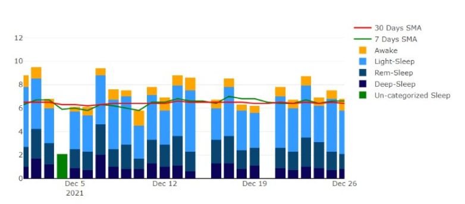

What Is This?
This site is designed as a web application to gather data to be used in a study of burnout and health in the nursing industry. The site is designed to gather data from users, both using questionnaires and through integrating biometric data from Fitbit wearable devices. This data is then aggregated into reports generated by the research group
The Team
Meron is hard working, task oriented, and open to criticism. When changes to the database needed to be made, he had no problem accommodating them. Database design is something Meron has been interested in, so this project was perfect for more experience. After completing the ICS program, Meron plans to design databases full time for The Empire.
An avid fantasy enthusiast and Lego collector, Mike has always felt at home writing code. Tasked with building the API that stands in between the database and frontend, Mike is taking security as the primary concern. Mike has also spent over ten years in leadership positions outside of the tech industry and has accepted the responsibility of leading this project.
Aleks is the creative one on the team. As a hobbyist architectural photographer, a strong mind for composition is important for a well-designed user experience. His main tasks are to write the code to create the frontend which in turn will communicate with the API as well as design the UI to be built around it. In the future, Aleks hopes to be further honing his skills in the public tech sector.
The project was initiated by Rich Burman, an Applied Research Coordinator for Camosun Innovates, a research group within Camosun College. Rich will take over ownership of the project and will continue with the study.
How Does It Work?
Questionnaires are divided into two categories:
- 1. Weekly Surveys
- - These surveys will be required every week starting from the 7th day of the study period. This survey is simply questions related to the user's feelings of stress, wakefulness, and energy
- 2. Daily Surveys
- - These surveys will ask about the user's quality of sleep the night before, the overall feeling of energy shortly after waking up, and ask what activities they have performed
- - After completing this survey, the user will be rerouted through to the Fitbit API to gather biometric data
What Data Do We Collect?
Aside from the survey questions asked, the site will collect data from the user's Fitbit account. This information includes:
- Sleep stats - quality of sleep, how long spent in each sleep stage
- Activity Info - right now the site will collect information on steps walked in 15-minute increments
- Heart Rate Info - Collect data on user's heart rate with 1-minute increments
How Are We Protecting The Data?
All information collected about a user: their profile info, Fitbit data, and survey answers are stored in an encrypted state within the database. Furthermore, all end points are protected with JSON tokenization, meaning that unregistered users have no access to data outside their own personal submissions. Access through the Fitbit authorization endpoint is protected with a state representing this token, so Cross-Site Forgery Attacks are prevented.
What Is Being Done With This Data?
All data collected is for the use of the research group. Researchers are the only ones with access to other users' data and export this data into .xlsx format. Biometric data is split into different sections based on time, as the researchers are particularly interested in activity before and after the user's work shift.
This data will hopefully reveal insights into correlations between users' activity and their stress and burnout. It is hoped that this could lead to future recommendations on how nursing staff can cope or offset stress.
Contact Us
For any questions or inquiries, the development team can be reached at camosuninnovatesnursingdev@gmail.com